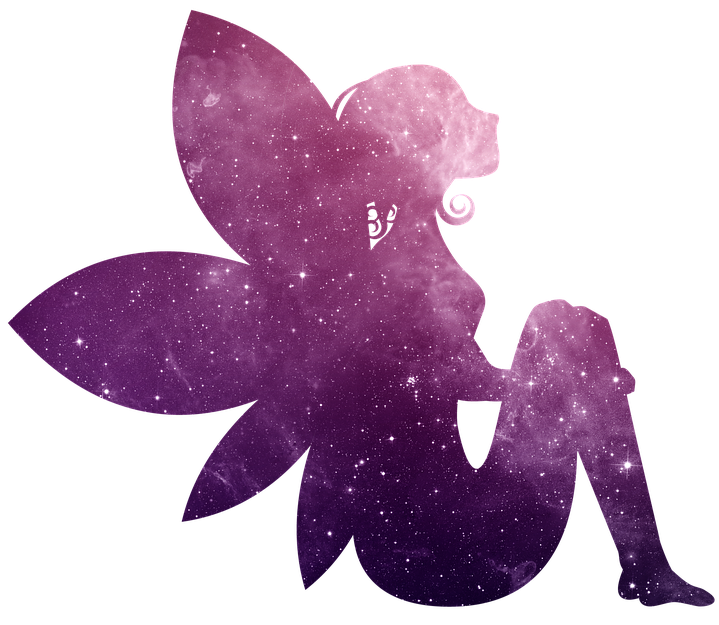
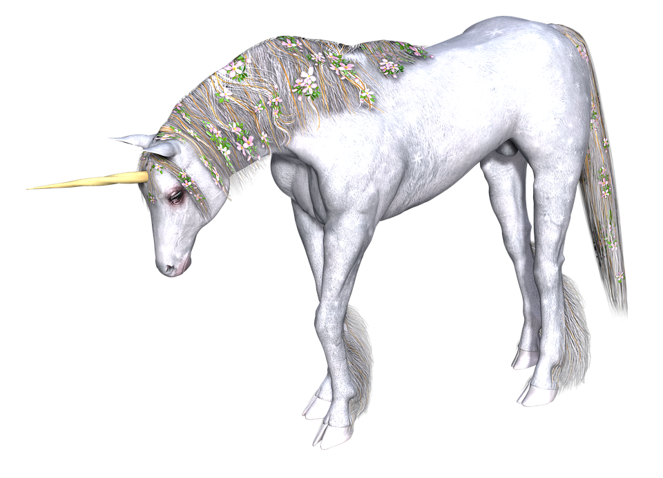
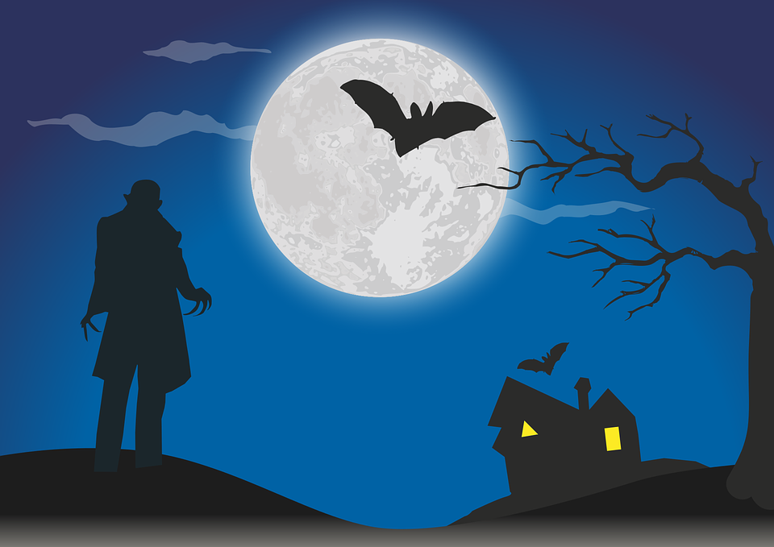

Mythical creatures -- from memories to imagination to musings, mythical creatures can show up in any aspect of one’s life, at any time. They can offer help, they can offer harm, or they may simply be in search of something that amuses them. Whatever it is, it cannot be denied that these creatures have captured the attention of people all over the world, and all through the ages. Here, one can find a list of seven or the most popular mythical creatures to exist. The information covers many topics, but one of the topics that there is a heavy focus on for many of these mythical creatures is their portrayal in media. After all, the media is the future of these mythical creatures.
| Dragons | Fairies | Mermaids | Phoenixes |
|---|---|---|---|
| |
 | ||
| Unicorns | Vampires | ||
|  |  |